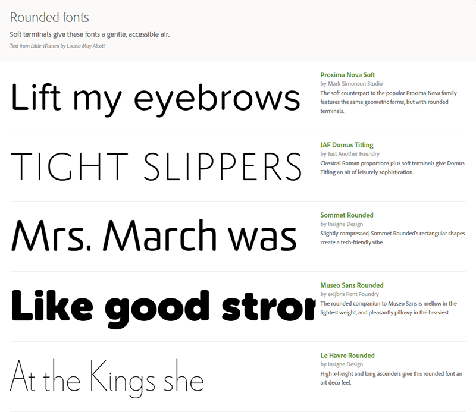
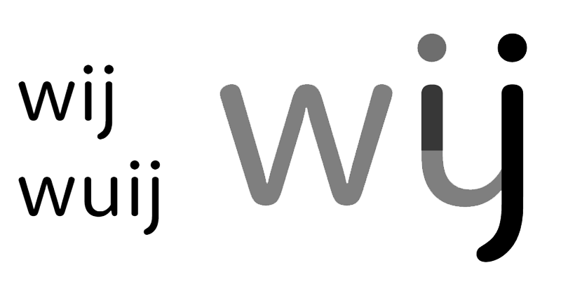
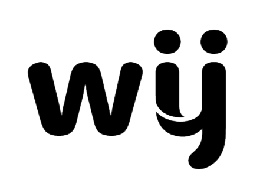

, zowel in print als digitaal.
, zowel in print als digitaal.In de zomer van 2014 ben ik gevraagd om een voorstel te doen voor het nieuwe logo van WIJ Jonge Ouders. De voorstellen van verschillende ontwerpbureaus waren in de voorgaande ronde afgekeurd door de redactie. Op basis van de volgende uitgangspunten heb ik nog een ontwerp gemaakt: Het uitstralen van de kernwaarden, symboliek tussen moeder en kind, en een duidelijke merkstructuur.
Door een sans serif lettertype te kiezen met ronde vormen krijgt het logo een toegankelijke en betrouwbare uitstraling.
 https://typekit.com/lists/rounded-fonts
Problematisch voor het WIJ-logo is de balans tussen leesbaarheid van de letters W en IJ en de noodzaak om het symbolisch en uniek te maken. Vorige ontwerpen waren uniek maar lastig leesbaar of goed leesbaar maar bijna gelijk aan de normale schrijfletters.
De Nederlandse taal heeft echter een unieke ligatuur door de samengevoegde i en j. Door het gekozen lettertype uit te breiden ontstaat een karakter dat goed leesbaar is.
Om het karakter uniek te maken moet de symboliek tussen moeder en kind worden weergegeven, zonder de leesbaarheid aan te tasten. Door de vorm op onderstaande manier te breken ontstaat een ondersteunend symbool dat een ouder-kind relatie uitbeeldt.
Inmiddels wordt het logo gebruikt voor alle communicatie van WIJ , zowel in print als digitaal.